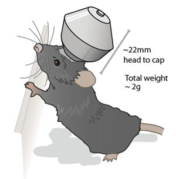
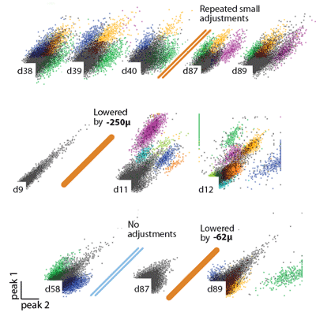
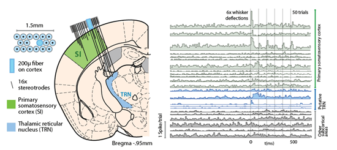

Low weight The flexDrive weighs ~2g, so there is minimal impact on animal behaviour, and the drive can be positioned flexibly for targeting of lateral or frontal areas.
Individually moveable electrodes significantly increase the longevity of implants and make it possible to record from identified single units.

High channel count The flexDrive supports 16 individual drives and up to 64 channels. This enables simultaneous recordings of single units from multiple distributed brain areas.